CH28 — ep
episode一覧（サムネ付き / 綺麗なURL）
ep
Script Viewer
snapshot
guide
60代からの静かな救いの物語 (CH28)
script 30/30
updated_at: 2026-01-13T11:01:50.708525Z
URL例:
/ep/CH28/001/thumb/
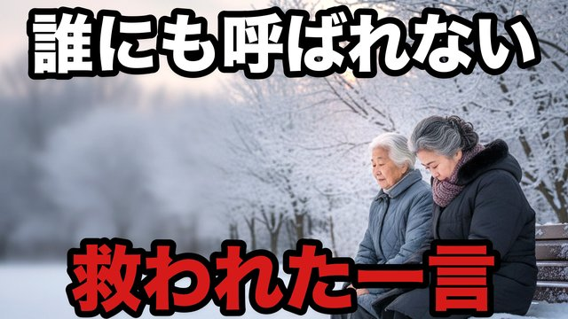
CH28-001
誰にも呼ばれない冬…公園の一言で救われた
script ✓
画像 —
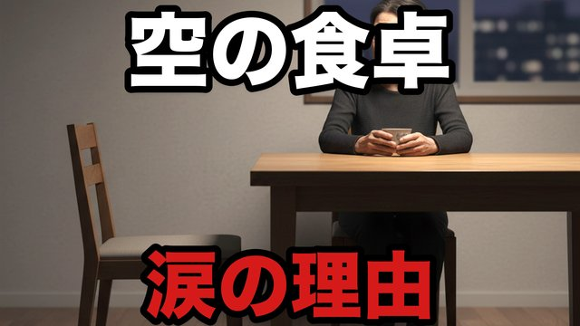
CH28-002
夫を見送った夜…“空の食卓”が私を壊しそうだった
script ✓
画像 —
CH28-003
朝の電話が鳴らない…それでも私は生きていく
script ✓
画像 —
CH28-004
スーパーで倒れそうになった日…助けてくれたのは“知らない人”
script ✓
画像 —
CH28-005
「迷惑かけたくない」…その気持ちが孤独を作っていた
script ✓
画像 —
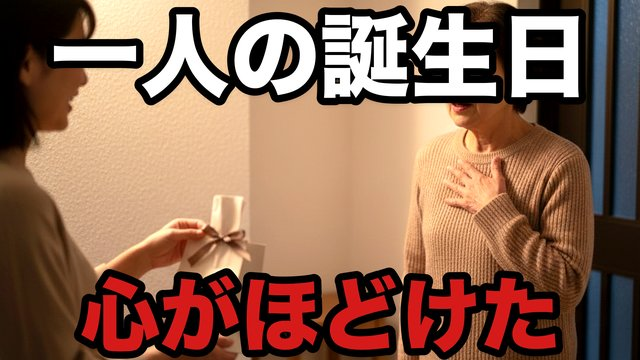
CH28-006
一人の誕生日…ケーキより温かかった“言葉”
script ✓
画像 —
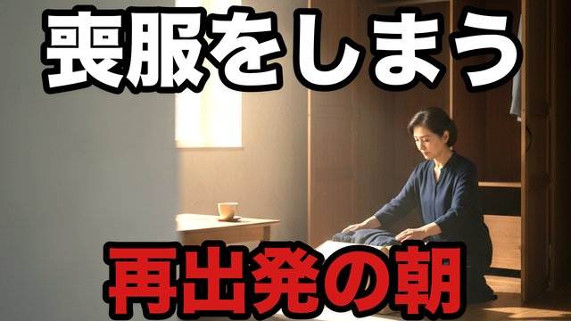
CH28-007
喪服をしまった日…“終わり”じゃなく“始まり”だった
script ✓
画像 —
CH28-008
家にいるほど苦しい…外に出たら見えた世界
script ✓
画像 —
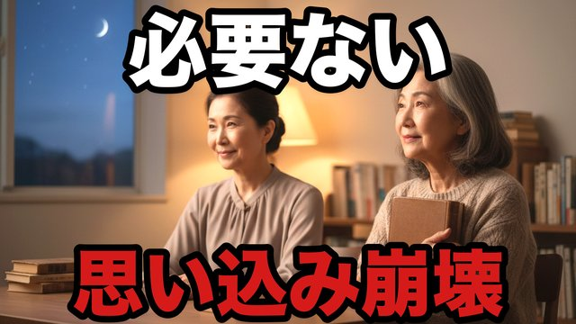
CH28-009
「私は必要ない」…思い込みを壊した一冊の本
script ✓
画像 —
CH28-010
涙が出ない夜…“泣けない自分”を許した
script ✓
画像 —
CH28-011
誰にも言えない不安…“聞くだけ”の人に出会った
script ✓
画像 —
CH28-012
孤独が怖い…だから“予定”を一つだけ作った
script ✓
画像 —
CH28-013
鏡の中の自分が嫌いだった…でも今日だけは違った
script ✓
画像 —
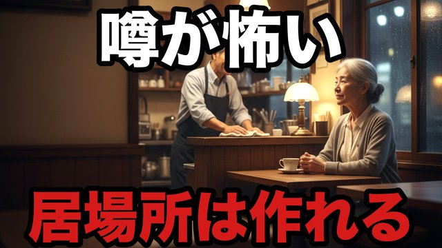
CH28-014
町の噂が怖い…それでも“居場所”は作れる
script ✓
画像 —
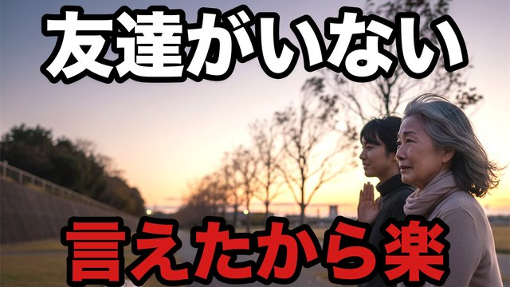
CH28-015
「友達がいない」…その言葉を言えた日から楽になった
script ✓
画像 —
CH28-016
一人で病院へ…受付の一言で泣きそうになった
script ✓
画像 —
CH28-017
空回りの優しさをやめたら、人が寄ってきた
script ✓
画像 —
CH28-018
夜の静けさが怖い…ラジオじゃなく“声”が欲しかった
script ✓
画像 —
CH28-019
「もう遅い」って言いかけた…その瞬間に来た電話
script ✓
画像 —
CH28-020
孤独を隠すのをやめた…私は私でいい
script ✓
画像 —
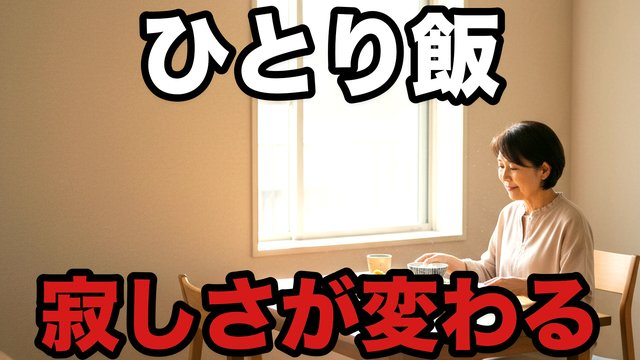
CH28-021
“ひとり飯”が寂しい…でも工夫で変わった
script ✓
画像 —
CH28-022
手紙を書いた…送らない手紙が私を救った
script ✓
画像 —
CH28-023
“何もできない日”があってもいい
script ✓
画像 —
CH28-024
誰にも会わない日…それでも心は回復する
script ✓
画像 —
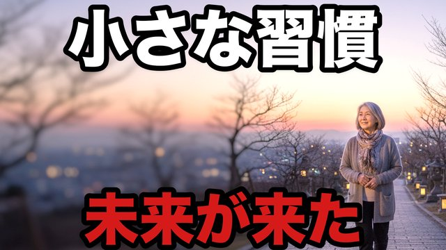
CH28-025
小さな習慣が“未来”を連れてきた
script ✓
画像 —
CH28-026
“聞く”だけで世界が変わった…私の口が一つの理由
script ✓
画像 —
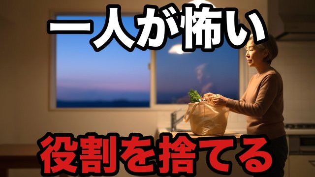
CH28-027
一人が怖い…でも“二人分の役割”は捨てていい
script ✓
画像 —
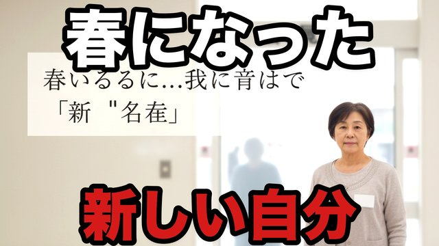
CH28-028
春になった…私は“新しい名前”で呼ばれた
script ✓
画像 —
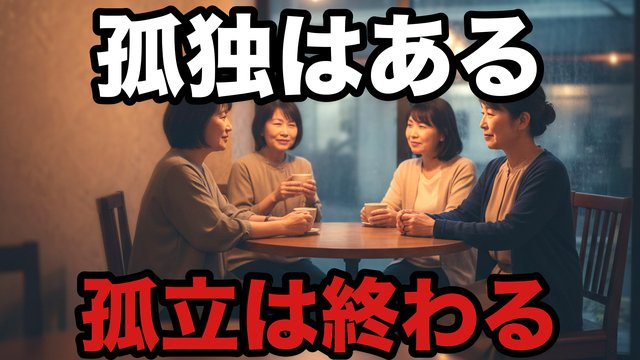
CH28-029
孤独は終わらない…でも“孤立”は終わらせられる
script ✓
画像 —
CH28-030
最後に残ったのは“温かい一杯”だった
script ✓
画像 —